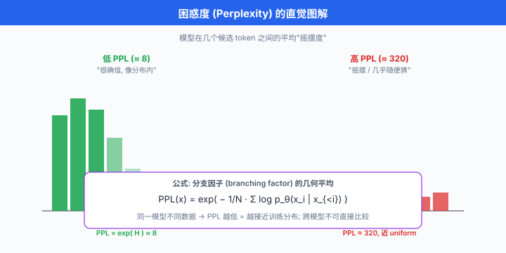

传统 NLP 指标¶
一句话总结：困惑度 / BLEU / ROUGE / METEOR / CIDEr / BERTScore 是 LLM 之前 NLP 圈打了二十年的老兵，它们用 n-gram 重叠或 embedding 相似度逼近"生成质量"，在 LLM 时代已经明显力不从心，但依然是每一份评测报告绕不开的基线。
BLEU 是 2002 年发明的，二十年后仍在被引用。 这不是因为它有多完美，而是因为它便宜、可复现、大家都在用 —— 而"大家都在用"本身，就是最难撼动的技术惯性。 想真正理解 LLM 时代的 eval 为何转向 LLM-as-Judge，得先明白这些指标当年解决了什么问题，又在什么地方栽了跟头.
- 上一节讲清了 LLM eval 为什么难 —— ground truth 缺失、多维不可通约、上下文敏感、分布外、评测者有偏。 现在我们把镜头拉回到 LLM 之前的 NLP 世界，看看学界曾经用什么办法凑合评测开放域生成. 这些方法有个共同前提：有一个或多个"参考答案" (reference)，打分器算模型输出与参考答案的某种相似度。
- 这一节要讲六种传统指标：困惑度 (perplexity)、BLEU、ROUGE、METEOR、CIDEr/SPICE、BERTScore. 前五种基于 n-gram 或规则，属于符号匹配派；最后一种基于 embedding，属于语义匹配派. 弄懂它们的数学、局限，以及为什么中文用会踩坑，是 LLM 时代做 eval 的必修基本功。
困惑度 (Perplexity, PPL)：语言模型自己的语言¶
- 困惑度 (perplexity, PPL) 是语言模型自评指标，不需要参考答案，只需要一段测试文本。 它衡量的是：模型对这段文本"有多惊讶".
数学定义¶
- 给一段测试文本 \(x_1, x_2, \dots, x_N\) (每个 \(x_i\) 是一个 token)，语言模型 \(P\) 对这段文本的困惑度定义为:
- 括号里那一坨 \(-\frac{1}{N} \sum \log P(x_i \mid x_{<i})\) 就是平均负对数似然 (average negative log-likelihood, NLL)，也就是交叉熵 (cross-entropy, CE) 的 per-token 版本。 换句话说:
- 交叉熵与困惑度是一一对应的单调变换。 之所以还要包一层 \(\exp\)，是为了让数字回到词表尺度：一个词表大小为 \(V\) 的完全随机模型，每一步分布是均匀 \(1/V\)，于是 \(\text{PPL} = V\)；一个完美预测下一个 token 的模型，\(\text{PPL} = 1\). 直觉上，PPL 就是"模型平均在几个候选之间摇摆".
信息论解释¶
- 从信息论角度，交叉熵 \(H(p, q) = -\sum p(x) \log q(x)\) 度量的是用分布 \(q\) 编码来自 \(p\) 的样本，平均每 token 需要多少 bit (若 \(\log\) 取 2) 或多少 nat (若 \(\log\) 取 e). PPL 就是这个 bit/nat 数的指数还原:
- 因此 PPL 减一半，意味着模型对测试文本的编码效率翻倍 —— 这在预训练时代是极强的进步信号。 Shannon 1951 年估算英文的熵下限约 1.3 bit/char (以 2 为底)，对应约 \(2^{1.3} \approx 2.5\) 的字符级 PPL; 2020 年前后的 GPT-3 在多个基准上 token 级 PPL 已大幅降至两位数区间，但这里的 token 与 char 不是一回事，后面还要展开。
局限一：高 PPL ≠ 生成质量差¶
- PPL 只反映模型对测试分布的建模能力. 一个 PPL 极低的模型，上线后依然可能生成套话、幻觉、答非所问。 因为:
- PPL 低意味着平均能预测好下一个 token，不意味着采样后生成的整段文字符合人类偏好。
- PPL 是per-token 指标，一个连续生成 100 token 的样本，只要其中 90 token 高概率，就能拉低整体 PPL —— 哪怕开头的 10 个 token 已经把"事实性"毁得一塌糊涂。
- 反过来，一个 RLHF 之后的模型可能 PPL 变高 (因为它学会拒答、更谨慎)，但 human eval 分数明显更好。 PPL 与人类偏好在 post-training 阶段常常反相关，这一点在 InstructGPT 论文 (Ouyang et al., 2022) 里有明确报告。
局限二：Tokenizer 依赖导致不可跨模型直接比较¶
- 这是 PPL 最要命的坑。 同一段中文 "深度学习是人工智能的核心", GPT-4 的 tokenizer 可能切成 8 个 token, Llama 3 的 tokenizer 可能切成 12 个，ChatGLM 的可能切成 6 个。 每个模型的 \(N\) (总 token 数) 不同，PPL 的绝对值自然不同 —— 哪怕两个模型对这段文本的"真实概率密度"完全一样.
- 从数学看：对同一段字符序列 \(c_{1:M}\)，不同的 tokenization 方案会给出不同的 token 序列 \(x_{1:N_A}\) 和 \(y_{1:N_B}\)，而
- 是 per-token 的量，但 \(N_A \ne N_B\)，所以 \(\text{PPL}_A\) 和 \(\text{PPL}_B\) 没有可比性。 想跨模型比，得转到 bits-per-character (BPC) 或 bits-per-byte (BPB):
- BPC 归一化到字符维度，消除 tokenizer 差异。 这也是 Chinchilla (Hoffmann et al., 2022)、LLaMA 系列论文里报告 BPB 而非 PPL 的原因。
代码实验一：用 Hugging Face 计算 PPL¶
import torch
import math
from transformers import AutoTokenizer, AutoModelForCausalLM
def compute_perplexity(model, tokenizer, text: str, device: str = "cuda") -> float:
"""
计算给定文本在模型下的 per-token 困惑度.
注意: 这里用 causal LM 的标准做法, 不考虑滑窗切分长文本.
"""
encodings = tokenizer(text, return_tensors="pt").to(device)
input_ids = encodings.input_ids
with torch.no_grad():
# 语言模型的 loss 已经是 per-token 平均负对数似然 (自动 shift)
outputs = model(input_ids, labels=input_ids)
nll = outputs.loss.item() # 平均 NLL (nat)
return math.exp(nll) # PPL
# 用法示例
model_name = "gpt2"
tokenizer = AutoTokenizer.from_pretrained(model_name)
model = AutoModelForCausalLM.from_pretrained(model_name).eval().to("cuda")
ppl_en = compute_perplexity(model, tokenizer, "The quick brown fox jumps over the lazy dog.")
ppl_zh = compute_perplexity(model, tokenizer, "深度学习是人工智能的核心技术.")
print(f"英文 PPL = {ppl_en:.2f}")
print(f"中文 PPL = {ppl_zh:.2f} # GPT-2 中文 tokenizer 差, PPL 会很高")
# 关键警告: 这两个数字不能直接横比不同模型, 只能纵比同模型不同数据
- 这个数字告诉你什么：同一个模型在不同数据上 PPL 越低，该数据越接近模型训练分布。 这个数字骗你什么：一个 PPL 30 的模型不一定比 PPL 40 的模型"生成质量好"，只是"对测试集分布拟合更好".

BLEU：机器翻译的第一份"客观"评分¶
- BLEU (Bilingual Evaluation Understudy，双语评测替代)，由 Papineni 等人 (2002) 在 IBM 提出，是开放域生成评测的开山之作。 它诞生的背景是机器翻译：那个年代 (SMT 时代) 评测靠专家人工，慢且贵，IBM 需要一个自动化 + 与人类判断相关的替代。 BLEU 就是那个"评测替身" —— 名字里的 "Understudy" 就是这个意思。
数学定义¶
- BLEU 的核心是修正的 n-gram 精确率 (modified n-gram precision). 给一个候选翻译 \(c\) 和一组参考翻译 \(\{r_1, r_2, \dots\}\)，对每个 n-gram \(g\):
- 直译：候选里出现次数，但上限是所有参考里同一 n-gram 出现的最大次数。 这个 clip 操作专门反制"候选翻译疯狂重复某个高频词刷分"的作弊路径。
- 对每个 n (通常 \(n \in \{1, 2, 3, 4\}\))，修正精确率为:
- 直接把 \(p_1, p_2, p_3, p_4\) 相乘会太小 (每个都 < 1)，所以取几何平均并加权:
- 通常 \(N=4\), \(w_n = 1/4\). 前面那个 \(\text{BP}\) 是长度惩罚 (brevity penalty)，阻止模型靠"输出超短"来刷高精确率:
- \(c\) 是候选长度，\(r\) 是"最接近候选长度的参考"的长度。 候选比参考短就打折，短得越狠罚得越重。
局限：只看 n-gram 重叠，忽略同义与语义¶
- BLEU 的哲学是"字面越像参考越好". 这个假设在机器翻译这种低创造性任务上尚可，一旦到了摘要、对话、创意写作这类需要合理释义的任务，BLEU 立刻拉胯。 举两个经典反例:
- 参考："小猫在垫子上". 候选 A: "小猫在垫子上" → BLEU 满分。 候选 B: "猫咪坐在毯子上" → BLEU 接近 0 (虽然意思几乎一样).
- 参考："会议将在下周二举行". 候选："下周二会开会" → BLEU 极低 (词序全变)，但语义等价.
- BLEU 也惩罚合理创新. 一个翻译得更地道、更符合目标语言习惯的版本，常常在 n-gram 上偏离参考，反而得分低。 这就是为什么 SMT 时代过度优化 BLEU 会得到"翻译味"极重的机器输出.
局限：Tokenization 版本差异 —— SacreBLEU 存在的理由¶
- BLEU 有一个臭名昭著的可复现性问题。 论文里报 BLEU=27.3，你复现出 BLEU=25.1，差 2.2 分，差别可能大到影响论文接收。 原因常常不在模型，而在:
- 分词工具 (Moses 分词器 vs SacreBLEU 内置分词器 vs 你自己写的 split)
- 是否 lower-case
- 是否处理 punctuation
- n 取 4 还是取 3
- smoothing 方案 (log 0 时用什么 fallback)
- Post (2018) 干脆写了 SacreBLEU 论文，呼吁大家用一个统一签名的 BLEU. SacreBLEU 会输出一个类似
BLEU+case.mixed+lang.en-de+numrefs.1+smooth.exp+tok.13a+version.1.5.1的签名，让 BLEU 分数从此可复现. 现在的 WMT 比赛已强制用 SacreBLEU.
代码实验二：用 SacreBLEU 计算 BLEU¶
# pip install sacrebleu
import sacrebleu
references = [
# 参考: 一个 list of list, 外层是"多套参考", 内层是每套参考的每一句
["The cat sits on the mat.", "A meeting will be held next Tuesday."],
]
candidates = [
"The cat sat on the mat.",
"There will be a meeting next Tuesday.",
]
# corpus BLEU 是标准报告方式, 不是逐句平均
bleu = sacrebleu.corpus_bleu(candidates, references)
print(bleu)
# 输出示例: BLEU = 41.72 82.4/50.0/33.3/25.0 (BP = 1.000 ratio = 1.083 ...)
# 括号里带着 signature, 决定这个分数能不能被别人复现
print(bleu) # repr 里会包含类似 BLEU|nrefs:1|... 的 signature 串
# 中文 BLEU 的坑: 默认 tokenizer 是英文空格切分, 中文用得先切分!
zh_refs = [["深度 学习 是 人工 智能 的 核心 技术 ."]] # 已 jieba 分词
zh_cand = ["深度 学习 是 AI 的 核心 技术 ."]
zh_bleu = sacrebleu.corpus_bleu(zh_cand, zh_refs, tokenize="none") # 关键参数
print(f"中文 BLEU (词级) = {zh_bleu.score:.2f}")
# 换成字符级 (中文常用)
zh_refs_char = [[" ".join("深度学习是人工智能的核心技术.")]]
zh_cand_char = [" ".join("深度学习是AI的核心技术.")]
zh_bleu_char = sacrebleu.corpus_bleu(zh_cand_char, zh_refs_char, tokenize="none")
print(f"中文 BLEU (字符级) = {zh_bleu_char.score:.2f}")
- 这个数字告诉你什么：候选与参考在 n-gram 层面重合多少。 这个数字骗你什么：高 BLEU 不代表翻译好，只代表表面像参考；低 BLEU 不代表翻译差，可能只是换了个更好的说法.
ROUGE：摘要评测的默认答案¶
- ROUGE (Recall-Oriented Understudy for Gisting Evaluation，面向摘要评测的召回替代)，由 Lin (2004) 提出。 它把 BLEU 的精确率思路翻转成召回率，因为摘要任务的核心问题不是"有没有加冗余"，而是"参考里的关键信息有没有被覆盖".
ROUGE-N: n-gram 召回¶
- ROUGE-N 的定义与 BLEU 精确率对偶:
- 分母是参考中的 n-gram 总数 (对比 BLEU 分母是候选中的)，分子是候选与参考共享的 n-gram 数。 常用 ROUGE-1 (unigram 召回) 和 ROUGE-2 (bigram 召回).
ROUGE-L：最长公共子序列 (LCS)¶
- ROUGE-L 引入最长公共子序列 (Longest Common Subsequence, LCS)，允许词序不完全一致也能匹配。 给候选 \(c\) 与参考 \(r\)，设 \(\text{LCS}(c, r)\) 为最长公共子序列长度，那么:
- \(\beta\) 通常远大于 1，强调召回。 ROUGE-L 的关键优势：不要求词序完全一致, "小猫坐在垫子上" 与 "小猫在垫子上坐" 可以拿到很高分数。
ROUGE-W：加权 LCS¶
- ROUGE-L 有个坑："AXBXCX" 与 "ABCXXX" 的 LCS 都是 3 (ABC)，但直觉上前者更"散"，后者更"连续". ROUGE-W (Weighted LCS) 用一个凸函数 \(f\) 奖励连续匹配，给"连成一片"的匹配更高权重。 实际使用中 ROUGE-1 / ROUGE-2 / ROUGE-L 三件套最主流，ROUGE-W 较少用。
局限¶
- ROUGE 与 BLEU 是同类物种，同样只看表面重叠，对同义和释义无感。 一份意思完全对但用词全换的摘要，ROUGE 分数会低得让你怀疑人生。 多份公开工作指出，ROUGE 与人类判断在神经生成 (abstractive) 摘要上的相关性远低于在抽取式摘要上，意思是：ROUGE 越是被 abstractive 模型挑战，越暴露它的过时.
METEOR：引入词干与同义的一次修补¶
- METEOR (Metric for Evaluation of Translation with Explicit ORdering)，由 Banerjee & Lavie (2005) 提出，是对 BLEU 的一次系统性修补. 它承认 BLEU 的"字面匹配"不够，于是把匹配过程分层:
- Exact match (完全一致)
- Stem match (词干匹配，如 "running" 与 "runs")
- Synonym match (同义词匹配，通过 WordNet)
-
Paraphrase match (释义匹配，高版本引入)
-
匹配得分基于 F-mean (调和平均，harmonic mean)，权重偏向召回:
- 然后引入词序惩罚 (fragmentation penalty)，把匹配的 unigram 按参考中的顺序打包成"chunk", chunk 越多 (越破碎) 惩罚越重:
-
最终 \(\text{METEOR} = F_\text{mean} \cdot (1 - \text{Penalty})\).
-
METEOR 的价值：在多次 shared task 上，它与人类判断的相关性明显优于 BLEU (Banerjee & Lavie 2005 原论文在 LDC/TIDES 2003 阿拉伯-英译数据上报告 sentence-level Pearson 相关性有可观提升). 但代价是需要外部资源 (WordNet、词干化器、释义表)，语言迁移性差 —— METEOR 中文版几乎不存在，因为没有等价的中文 WordNet.
CIDEr / SPICE：图像描述专用¶
- CIDEr (Consensus-based Image Description Evaluation), Vedantam et al. (2015). 专为图像描述 (image captioning) 设计。 关键洞察：一张图可能有多份人类描述，但共识才是重点。 CIDEr 用 TF-IDF (Term Frequency-Inverse Document Frequency，词频-逆文档频率，在 Ch07 已引入) 给 n-gram 加权 —— 常见的 n-gram 权重低，稀有的 n-gram 权重高:
-
\(\mathbf{g}^n\) 是 n-gram 的 TF-IDF 向量。 最终 CIDEr 是不同 n (通常 1-4) 的加权平均。 好处：对高频"废话短语" (如"这是一张图片") 有天然抑制.
-
SPICE (Semantic Propositional Image Caption Evaluation), Anderson et al. (2016). 更进一步，不看 n-gram，看语义图 (scene graph). 把候选和参考都解析成 (object, attribute, relation) 三元组，再算 F1. 举例："一只穿红衣服的小男孩在踢足球" 会被解析成:
- 对象：{男孩，足球，衣服}
- 属性：{男孩-小的，衣服-红色}
- 关系：{男孩-踢-足球，男孩-穿-衣服}
- 参考的三元组集合与候选的三元组集合算 F1. 优势：完全绕开语言表面，只比语义结构. 劣势：依赖 scene graph parser 的质量, parser 一崩满盘皆输。
BERTScore：用 embedding 做的最后一次挣扎¶
- BERTScore, Zhang et al. (2019). 是 pre-LLM 时代指标派的最后一次重大更新。 它抛弃 n-gram，改用 BERT 的 contextual embedding 算 token-level 余弦相似度。 数学定义:
-
\(v_i, v_j\) 是候选和参考中每个 token 经 BERT 编码后的 contextual embedding, \(w_j\) 是可选的 IDF 权重。 直觉：每个参考 token 找一个候选中最相似的 token，取平均；反之亦然。
-
BERTScore 的核心优势：因为用 embedding, "小猫" 和 "猫咪" 的相似度接近 1 —— 同义/近义天然被识别。 相比 BLEU/ROUGE，与人类判断的相关性在多份公开评测 (如 WMT 机器翻译评测) 上明显更高 (Zhang et al. 2019 在 WMT 多个语言对的 segment-level 相关性实验中报告显著优于 BLEU 的结果，具体数值随语言对与模型选择波动).
-
局限: BERTScore 依赖你选的 encoder. 用
bert-base-uncased还是roberta-large，中文用bert-base-chinese还是xlm-roberta，分数不能直接横比。 而且大 encoder 慢，5 万条测试跑一遍够你等一杯咖啡。
代码实验三：极简 BERTScore 实现¶
import torch
from transformers import AutoTokenizer, AutoModel
class SimpleBERTScore:
"""
最小版 BERTScore, 演示核心思想: token embedding + 双向 max cosine.
真实使用请用 bert_score 包 (pip install bert-score), 有 IDF、baseline、rescale.
"""
def __init__(self, model_name: str = "bert-base-chinese", device: str = "cuda"):
self.tokenizer = AutoTokenizer.from_pretrained(model_name)
self.encoder = AutoModel.from_pretrained(model_name).eval().to(device)
self.device = device
@torch.no_grad()
def _embed(self, text: str) -> torch.Tensor:
enc = self.tokenizer(text, return_tensors="pt", truncation=True).to(self.device)
# 取最后一层, 去掉 [CLS] 与 [SEP]
h = self.encoder(**enc).last_hidden_state[0, 1:-1] # (T, D)
# 归一化后 cos = dot
return torch.nn.functional.normalize(h, dim=-1)
def score(self, candidate: str, reference: str) -> dict:
c_emb = self._embed(candidate) # (Tc, D)
r_emb = self._embed(reference) # (Tr, D)
# (Tc, Tr) 的相似度矩阵
sim = c_emb @ r_emb.T
# Precision: 每个候选 token 找参考里最相似的
p = sim.max(dim=1).values.mean().item()
# Recall: 每个参考 token 找候选里最相似的
r = sim.max(dim=0).values.mean().item()
f = 2 * p * r / (p + r + 1e-9)
return {"P": p, "R": r, "F": f}
# 玩具例子: 同义替换
scorer = SimpleBERTScore()
result = scorer.score(
candidate="猫咪坐在毯子上",
reference="小猫在垫子上",
)
print(f"BERTScore 同义句: P={result['P']:.3f}, R={result['R']:.3f}, F={result['F']:.3f}")
# 预期 F > 0.85, 而 BLEU-4 会接近 0
- 这个数字告诉你什么：候选与参考在 BERT 表示空间的语义相似度。 这个数字骗你什么：语义相似不等于事实正确 —— 一句"太阳从西边升起"与"太阳从东边升起", BERTScore 会非常高 (只差一个字)，但事实完全反了。
横向对比表¶
| 指标 | 主要任务 | 需 ground truth | 与人类相关性 | 主要缺陷 |
|---|---|---|---|---|
| Perplexity | 语言建模 | 否 (要测试文本) | 低 (post-training 阶段常反相关) | 依赖 tokenizer，不可跨模型 |
| BLEU | 机器翻译 | 是 (多参考) | 中 (MT)，低 (其他任务) | 只看 n-gram 表面，惩罚合理释义 |
| ROUGE-N | 摘要 | 是 (可多参考) | 中 | 忽略同义，抽取式偏好 |
| ROUGE-L | 摘要 | 是 | 中 | 忽略语义，只放宽词序 |
| METEOR | 机器翻译 | 是 | 中偏高 (优于 BLEU) | 依赖 WordNet 等外部资源，语言迁移差 |
| CIDEr | 图像描述 | 是 (多参考) | 中偏高 (captioning) | 依赖 TF-IDF 语料估计 |
| SPICE | 图像描述 | 是 | 高 (captioning) | 依赖 scene graph parser 质量 |
| BERTScore | 各类生成 | 是 | 高 (相比 BLEU 明显提升) | 依赖 encoder，事实性感知弱 |
实战陷阱 (集合)¶
- 陷阱 1: BLEU 数值不同，是模型差还是 tokenizer 差? 论文里的 BLEU 分数必须附带 SacreBLEU signature (或至少写清 tokenizer 与 smoothing). 没写就是耍流氓。 复现别人结果对不上时，第一件事查 tokenizer 版本。
- 陷阱 2：短生成得高 BLEU. BLEU 的 brevity penalty 是弱惩罚 —— 只要长度不比参考短太多，BP 就接近 1. 一个策略是"只翻主句，略掉从句", BLEU 可以刷得漂亮。 这也是 SMT 时代短翻译普遍存在的动机之一。
- 陷阱 3：只报一个数字. 上一节说过，eval 的最低职业道德是报 mean + stdev + n. 一个 corpus-level BLEU=27.3 没有句间方差信息，不知道是"稳定 27" 还是 "50% 是 40, 50% 是 15". 摘要类指标必须报分布.
- 陷阱 4: LLM 时代还在把 BLEU 当唯一 metric. 现在 LLM 输出高度 abstractive，用户 prompt 高度开放，BLEU/ROUGE 已经明显低估好模型 (合理释义会被惩罚). 但为什么依然在用？因为便宜、快、可复现，而且大量历史论文的对比表离不开它 —— 这是技术惯性，不是技术合理性。
中文分词的额外坑¶
- 中国读者做 eval，有一个额外痛点：中文没有天然的词边界，传统 NLP 指标 (BLEU / ROUGE / METEOR) 全都假设"按空格切好的词"，一到中文全部露馅。
坑 1：用字符还是用词?¶
- 字符级 (char-level)：每个中文字符当一个 token. 优点：完全无歧义，谁跑都一样，不依赖任何分词器。 缺点：粒度太细，4-gram 覆盖 4 个字符，与英文 4-gram 覆盖 4 个词的语义粒度根本不是一回事，数字不能直接对齐。
-
词级 (word-level)：先分词再算 n-gram. 优点：粒度更接近英文，语义更合理。 缺点：分词器差异会引入数字漂移.
-
Chinese NLP 圈的默认最佳实践:
- BLEU 官方推荐字符级 (SacreBLEU 的
zhtokenizer 就是逐字符切)，因为跨模型可复现。 - ROUGE 中文常用字符级 ROUGE，因为摘要任务的关键信息在字符层面已足够。
- 但如果你的对比对象 (baseline 论文) 用的是词级，请跟他用同一种，别横比字符级和词级的分数。
坑 2：分词工具差异¶
- 就算用词级，你用 jieba，别人用 pkuseg，我用 THULAC，大家分出来的词都不一样:
- "深度学习" 三家可能分成：
深度 学习/深度学习/深度学 习(最后一个是错的，但一些老版本 pkuseg 真会切出这种) -
分完的粒度差异导致 n-gram 集合完全不同，BLEU 分数漂移 3-8 分是家常便饭
-
多份中文生成评测报告显示，同一模型换分词器，BLEU-4 与 ROUGE-L 的绝对分值往往会出现 3-8 分级别的漂移。 中文 eval 论文如果不标注分词器，一律怀疑.
坑 3：中文停用词与标点¶
- 中文的"的、了、也、是"极高频，unigram 精确率天然被拉高。 一些 eval 实现会做停用词过滤，一些不做，差异明显。 中文标点用全角 (
。，？) 还是半角 (.,?) 也影响 tokenization —— evaluation 前做统一 normalize 是常识，但常识常常被忽略。
中文 eval 的建议清单¶
- 报 BLEU/ROUGE 时明确写字符级/词级，词级则写清分词器版本
- 优先用 SacreBLEU 的
--tokenize zh(字符级) 作为基线 - 同时报 BERTScore (用
bert-base-chinese或更强的中文 encoder)，弥补字面匹配的偏差 - 长文本任务 (摘要) 额外报 ROUGE-L 字符级 + BERTScore F1 双指标
- 论文里坚持公开原始参考与候选文本，让别人可以自己重新分词复现
LLM 时代它们为什么"过时"却依然在用¶
- LLM 时代，传统指标至少在三个层面失效:
- 释义惩罚：好 LLM 会用完全不同的措辞表达相同意思，越好的 LLM 越"叛逃"参考文本的表面。
- 多参考不足：传统 benchmark 常常只有 1-4 个人工参考，而 LLM 的合理输出空间远大于此。
- 无法评估长文与推理：一段 500 词的技术说明，用 BLEU 打分几乎没意义 —— 关键信息覆盖、逻辑一致性、事实正确性，这些BLEU/ROUGE 无法看到.
- 但它们仍然在用，原因也是三条:
- 技术惯性：二十年积累的对比数据都在这套指标上，换指标等于放弃可比性.
- 零成本：不需要 human eval，不需要调 API 花钱，跑个脚本 10 分钟出结果。
- 诊断价值: BLEU 从 15 涨到 30 是可靠的进步信号，从 30 涨到 45 也是，只是绝对值意义不大. 用来做训练过程的 regression check，它们依然是合格的哨兵。
- 从下一节开始，我们进入现代 benchmark 体系 —— MMLU、GSM8K、HumanEval —— 这些指标已经跳出参考文本，转向任务级正确性 (选对题、跑通测试) 或 对战胜负 (arena)、LLM 打分 (judge). 传统指标从主角变成配角，但配角依然要认识。
📌 本节要点¶
- 困惑度 (PPL): \(\text{PPL} = \exp(\text{CE})\)，语言模型自评；PPL 低不等于生成好，且 tokenizer 差异导致不可跨模型直接比较，跨模型请用 BPC/BPB.
- BLEU: n-gram 精确率 + brevity penalty 的几何平均；机器翻译起家，只看字面重叠，惩罚合理释义；复现必须报 SacreBLEU signature.
- ROUGE：面向摘要的召回替代；ROUGE-N 是 n-gram 召回，ROUGE-L 用 LCS 允许词序松弛；抽取式表现好，abstractive 上明显低估。
- METEOR：在 BLEU 上加词干、同义 (WordNet)、词序惩罚，与人类相关性优于 BLEU；但依赖外部资源，中文缺乏对应实现。
- CIDEr / SPICE：图像描述专用；CIDEr 用 TF-IDF 加权 n-gram 突出稀有信息，SPICE 用 scene graph 三元组直接比语义结构。
- BERTScore：用 contextual embedding 的双向 max cosine，对同义/释义友好，与人类相关性显著优于 BLEU/ROUGE；但事实性感知弱，分数依赖 encoder 选择。
- 中文额外坑: BLEU 与 ROUGE 应优先字符级以保证可复现，词级需明确分词器；分词器差异导致数字漂移 3-8 分；中文优先补 BERTScore.
- LLM 时代地位：传统指标已明显跟不上 abstractive 生成与开放场景，但因技术惯性、零成本、诊断价值，仍是 eval 报告的必备基线。
参考文献¶
- Papineni, K., Roukos, S., Ward, T., & Zhu, W.-J. (2002). BLEU: a Method for Automatic Evaluation of Machine Translation. Proceedings of ACL 2002. (BLEU 原始论文.)
- Lin, C.-Y. (2004). ROUGE: A Package for Automatic Evaluation of Summaries. Proceedings of the ACL 2004 Workshop on Text Summarization Branches Out. (ROUGE 原始论文.)
- Banerjee, S., & Lavie, A. (2005). METEOR: An Automatic Metric for MT Evaluation with Improved Correlation with Human Judgments. Proceedings of the ACL 2005 Workshop on Intrinsic and Extrinsic Evaluation Measures for MT.
- Vedantam, R., Zitnick, C. L., & Parikh, D. (2015). CIDEr: Consensus-based Image Description Evaluation. CVPR 2015.
- Anderson, P., Fernando, B., Johnson, M., & Gould, S. (2016). SPICE: Semantic Propositional Image Caption Evaluation. ECCV 2016.
- Zhang, T., Kishore, V., Wu, F., Weinberger, K. Q., & Artzi, Y. (2019/2020). BERTScore: Evaluating Text Generation with BERT. ICLR 2020. arXiv:1904.09675.
- Post, M. (2018). A Call for Clarity in Reporting BLEU Scores. Proceedings of WMT 2018. arXiv:1804.08771. (SacreBLEU 论文.)
- Ouyang, L. et al. (2022). Training Language Models to Follow Instructions with Human Feedback. NeurIPS 2022. (InstructGPT 论文，报告 PPL 与人类偏好在 RLHF 后反相关.)
- Hoffmann, J. et al. (2022). Training Compute-Optimal Large Language Models. arXiv:2203.15556. (Chinchilla，报告 BPB 而非 PPL.)
- Shannon, C. E. (1951). Prediction and Entropy of Printed English. Bell System Technical Journal.